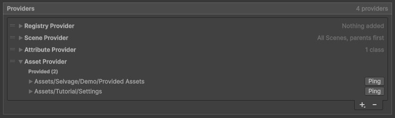

Manage the provider list
Edit the provider list
The provider list decides where every dependency comes from. For each member, Selvage tries the providers from top to bottom, and the first one that has a dependency gives it. The order is therefore the priority: to make a provider win over another, move it above.
To edit the provider list, go to Edit > Project Settings > Selvage, then do any of the following in the Providers section:
- To add a provider, select +. The menu lists every provider class in the project.
- To remove the selected provider, select -.
- To reorder providers, drag them.
- To edit a provider's settings, and see what it gives, expand it.

The + menu disables, with the reason, a provider class the list can't hold: a class that isn't
[Serializable], or a one-per-list class already in the list. The Attribute Provider, the Asset
Provider, each registry class and the Zenject and VContainer providers are one per list. The Scene Provider can be
listed several times, each with its own settings.
A provider shown as an error is one whose class no longer exists in the project, such as after a rename. It gives nothing, and keeps its place and settings until the class is back.
Selvage saves the provider list in ProjectSettings/SelvageSettings.asset. Commit that file so your team
shares the same list. Changes you make in Play mode are undone when you exit Play mode.
Providers that ship with Selvage
The Default setup lists the following providers, in this order:
| Provider | Gives | Can be Guaranteed |
|---|---|---|
| Registry Provider | Objects your code adds. | For an object added, not for a function |
| Scene Provider | Components in the loaded scenes. | For what the member's own GameObject always holds |
| Attribute Provider | Instances of classes marked [Provide]. | Yes |
| Asset Provider | Assets of Provide Definitions. | Yes |
The Can be Guaranteed column indicates whether the Validation tab of the Dependencies window can confirm in advance that the provider gives a dependency. What a scene contains, apart from what the member's own GameObject always holds, and what code adds later are only known when the member is injected.
Add a provider from code
The Injector class adds providers outside the list, such as a replacement in a test, or a provider from
a package:
Injector.AddFirst(provider); // tried before the whole list
Injector.AddLast(provider); // tried after the whole list
Injector.Remove(provider);
provider.Enabled = false; // skipped until enabled againSelvage removes a provider added in Play mode when you exit Play mode, and one added during a test when the test ends. The provider list displays these providers above and below the list, with a link to the code that added each one.
Injector.Providers returns every provider in the order Selvage tries them, the ones added from code
included.
Enabled isn't saved: every listed provider is enabled when the settings load, and exiting Play mode
restores what Play mode changed. The provider list dims a provider that code turned off. To keep a provider out for
good, remove it from the list.
Reuse your setup in other projects
A setup is everything on the Selvage page of the Project Settings window: the providers, their settings, and the other settings. Save your setup once to apply it in any project, the way Unity saves window layouts.
To save your setup, perform the following steps:
- Go to Edit > Project Settings > Selvage.
- At the top right of the page, open the More (⋮) menu, then select Save Setup....
- Enter a name, then select Save.
To apply a setup in another project, open the same menu and select the setup's name, then confirm. To go back, use Undo. Default applies the setup that ships with Selvage: the four shipped providers, with Inject by Default disabled and its Optional option enabled. For every item of the menu, refer to Project Settings reference.
Selvage saves your setups in the Unity preferences folder of your computer, so they're available in every project. A setup holds only settings: what a project provides lives in its assets and code. A provider of a setup whose class isn't in the project keeps its place as a placeholder, with a warning, and becomes the provider once the class is imported. A new project with no settings file starts from the setup you last saved or applied.